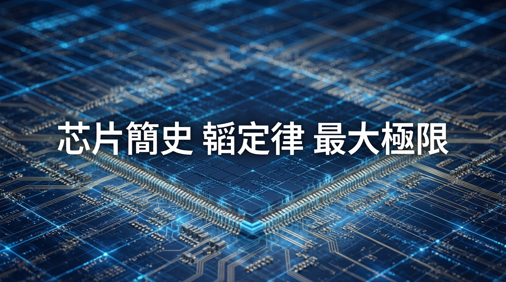

華為發布τ定律，時間縮微新路徑能否突破摩爾定律瓶頸？

2026年5月25日，華為發布「韜（τ）定律」，以時間縮微替代幾何縮微，透過邏輯折疊等創新技術持續壓縮信號傳播時延。這是中國企業首次在全球半導體領域提出引領產業發展的新原則，最大價值是在沒有最先進光刻機的情況下製造出綜合性能相當的芯片。
長期以來，業界一直透過幾何縮微提高芯片性能，但帶來兩種相反的趨勢：
根據摩爾定律，晶體管數目每兩年增加一倍，但隨著尺寸變小，瓶頸從計算速度轉移到時間延遲。韜定律的提出背景，正是摩爾定律放緩時，華為尋求直接解決時間延遲的問題。
韜定律以降低時間常數τ為目標，透過降低芯片、電路乃至系統層面上的時間延遲，更根本地解決瓶頸問題。
時間和空間是一體兩面，並非彼此對立。傳統幾何縮微讓晶體管速度更快，本質上也是達到時間縮微的效果。華為透過邏輯折疊縮短有效連線，直接減少時間延遲，兩者效果相同但路徑不同。
華為提出的邏輯折疊，不再採用傳統平面設計，而是將關鍵路徑上的門電路分布到多個垂直堆疊的有源層中：
華為論文提出，微縮因子α與應用場景相關：
韜定律和摩爾定律並不矛盾，是相互兼容的關係。韜定律更貼近芯片計算的本質——用戶更關注處理信息所需的時間，而不是使用了多少個晶體管。
最大價值：開闢了一條不依靠尺寸縮微的新設計路徑，可以在沒有最先進光刻機的情況下製造出綜合性能相當的芯片。
關於韜定律的極限，華為架構師表示：短期內還沒有看到邏輯折疊的邊界。摩爾定律當年也曾被預測在150納米遇到瓶頸，但後來芯片尺寸縮小到幾納米。就像剝洋蔥一樣，一層一層剝開，不斷發現新的可能。
以降低時間常數τ為目標，直接解決時間延遲問題
三維空間統籌設計，關鍵路徑更短，時間延遲更少
τ縮微在AI系統中可達每年10倍，超越移動設備和自動駕駛
中國企業首次在全球半導體領域提出引領產業發展的新原則
可在沒有最先進光刻機的情況下製造高性能芯片
短期內看不到邏輯折疊的邊界，工程師持續解決新障礙
| 維度 | 摩爾定律 | 韜定律 |
|---|---|---|
| 核心方向 | 幾何縮微（尺寸縮小） | 時間縮微（τ降低） |
| 瓶頸 | 物理極限、經濟效益挑戰 | 時間延遲 |
| 設計方法 | 平面設計 + 2D堆疊 | 邏輯折疊、三維空間統籌 |
| 與現有技術 | 傳統方法 | 兼容摩爾定律、相互促進 |
「韜定律開闢了一條不依靠尺寸縮微的新設計路徑，可以在沒有最先進光刻機的情況下製造出綜合性能相當的芯片。」
— 《芯片簡史》作者汪波在中美科技戰背景下，華為提出的韜定律代表了一種繞過先進光刻機限制的晶片設計思路。中國企業首次在全球半導體領域提出引領產業發展的新原則，這是對現有技術封鎖的一次直接回應，也是中國在半導體領域從「追隨」走向「引領」的重要里程碑。